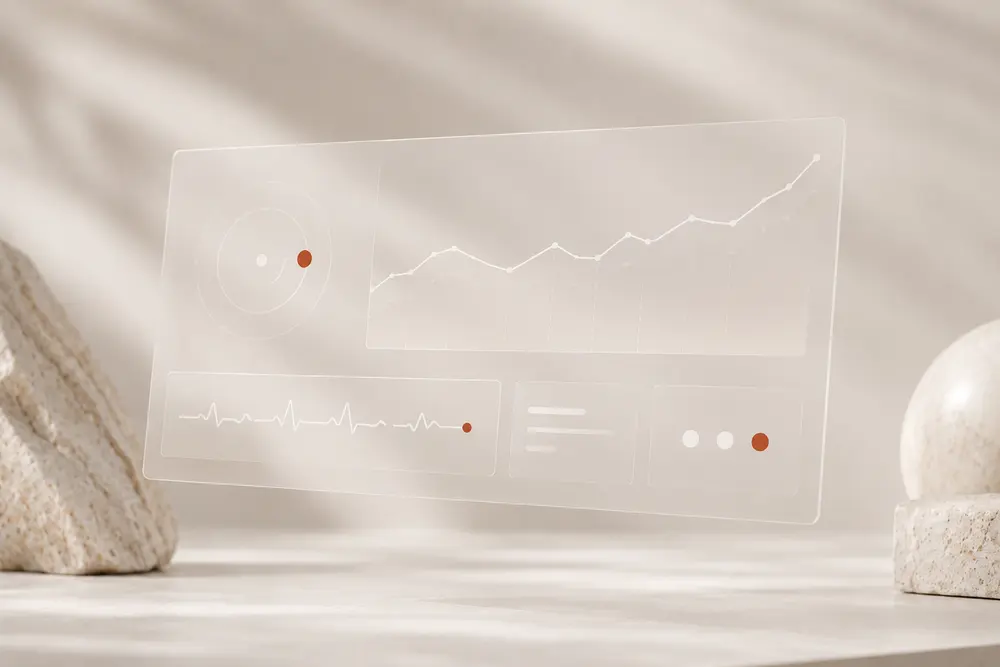
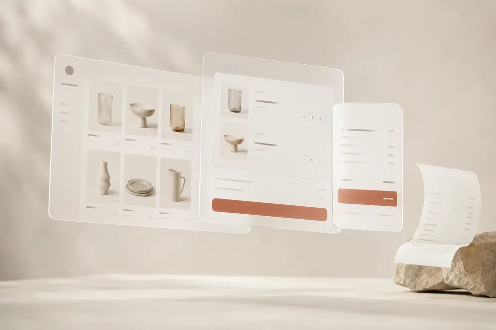

Indie maker · Enviando ahora mismo —
Construyo y envío software de verdad.
Soy Jesús. Hago productos de software que salen a producción, no presentaciones bonitas que mueren en un Figma. Mi estrella es OpenLen, un constructor de landing pages con IA. También envié InariWatch y OrbitaPOS.
Esta misma página la construyó OpenLen. Sin plataforma externa — la armé pieza por pieza y la publiqué con mi propio producto.
Tres productos.
Todos enviados.
Software de verdad, no demos. Cada cosa de esta lista salió a producción de verdad — una sigue viva, dos open source.
Describe una página, edítala y publícala en tu propio subdominio. La IA pone la estética.
Captura cada error de tu app Node antes de que lo haga tu usuario. Una línea para instalar.

Punto de venta para tiendas — web + app móvil. Cobra, controla inventario y saca tickets, sin complicaciones.

Imágenes y video —
sí, tu página de OpenLen puede llevarlos.
Fotografía, motion y reproducción en página. Todo dentro del mismo documento que publicas — sin servicios externos.
 Demo · OpenLen en acción
Demo · OpenLen en acción
Reproducción en página, dentro del documento publicado —
OpenLen genera páginas así · 57KB · LCP 1.2s · 100 LighthouseDiseño, escribo el backend, peleo con el deploy y vuelvo a empezar — todo solo, todo en producción. Builder solitario con manía por enviar: producto que la gente puede usar hoy, corriendo en mi propio Hetzner.
03
Productos enviados
1×
Solo, sin equipo
Self-host
en mi Hetzner
Míralo construir —
Describe una página. OpenLen la arma.
HTML estático, servido directo desde disco — sin runtime, sin esperas. La página se monta sola, capa por capa, frente a ti.
El Buen Pastor